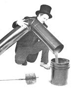
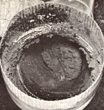

From the Canadian magazine Harrowsmith comes this helpful excerpt on how to sweep your own chimney.
Reprinted by permission from Harrowsmith Magazine, copyright© 1980
Whether cleaning one's own chimney or relying on the services of a sweep, the burner of wood should be aware of what is being removed and why it cannot be allowed to accumulate in a flue.
Creosote is the bane of many contemporary wood heating systems, and it is produced in quantity by a slow-burning, smoldering fire . . . the very sort that makes for those 6- to 16-hour burns of which many stove owners are so proud.
Creosote is the name of a specific chemical compound (C 8 H 10 O 2 ), which, in its commercially available form, is used to weatherproof railroad ties and other wood. It also occurs in chimneys used to vent wood smoke, but creosote from a sweep's viewpoint is a complex mixture of wood tar, soot, and other by-products produced by the burning of wood.
It appears in three primary forms: a thin, watery fluid that consists of creosote and soot mixed with water which has condensed in the chimney . . . a dry, black, gray, or brownish brittle crust found clinging to the inside of the flue . . . and a tarlike, sticky layer which can seriously clog a chimney. The sooty fluids and the tarlike layer are practically impossible to remove before they become pyrolized. These forms of creosote ignite only at extremely high temperatures. It is the brittle, pyrolized creosote which is the potential fuel for a flue fire.
Although relatively little research has been done on creosote formation, it is believed that three main factors determine the amount that is deposited at a given time or in a given chimney.
[1] Smoke Density. Creosote builds up when thick smoke, sometimes known as tar fog , condenses on the walls of a cool flue. Dense smoke occurs when a fire is oxygen-starved or when green wood is burned.
Contrary to the popular notion that seasoned hardwood will not yield creosote, there is ample evidence to show that even the driest, hardest of woods can cause problems if improperly burned. An airtight stove kept constantly in a tightly dampered state burns wood very slowly, producing heavy smoke and large amounts of incompletely burned wastes . . . no matter what fuel is used.
[2] Stack Temperature. A cold chimney serves as a distillation tube for warm tar fog, and a slow-burning fire is accompanied by lower flue temperatures and a correspondingly high rate of creosote formation. Other factors that come into play are the type of chimney and its location. The newer, insulated metal flues are reported by many sweeps to be much less prone to creosoting problems, while masonry chimneys that run up an outside wall are among the worst. The ideal chimney, in most opinions, is one which is contained within the house and therefore is much easier to keep warm.
[3] Residence Time. This term refers to the period necessary for smoke to exit from the stove and chimney. In a slowburning fire, smoke rises sluggishly up the chimney, providing increased exposure to the cooling effect of the flue walls. Bends and elbows in the stovepipe and flue also serve to increase the residence time by creating turbulence and swirls of tar fog.
One environment in which creosote formation is kept to a minimum is the typical open fireplace. With an unhampered flow of air, the wood burns rapidly and completely, with nearly complete combustion of flammable particles in the smoke and wood gas. The chimney of such a fireplace should be checked at least once each year, but cleaning may be necessary only in alternating years.
At the other end of the spectrum we find the efficient airtight stove, which, if kept in a perpetual slow burn, may clog a flue with creosote in two weeks or less.
Various folk methods of cleaning chimneys have evolved over the years, and range from sending the Christmas goose up the flue prior to beheading it, to pulling a small evergreen through the pipes. Other techniques involve drawing a burlap sack filled with sand up (or down) the flue, or rattling lengths of chain in the chimney to dislodge creosote and soot deposits (a tactic that may lead to cracked masonry or flue tiles).
None of the above can compare with the effectiveness-and ease-of using a modern steel chimney brush. Several slow passes through the chimney with one of these bristling devices is usually sufficient to remove virtually all removable creosote.
Two types are commonly available, the first being a brush with eyelets at the top and bottom, designed to be pulled through the chimney on a rope or ropes. A one-man method using this type of brush involves hanging a weight from the lower eyelet and lowering the brush down through the chimney. This method is occasionally used by professional sweeps when faced with a restricted access chimney, in which extension poles cannot be employed.
Most sweeps, however, prefer to work with a brush fitted to the end of a rod. This system allows one to work either from the rooftop or from inside the house, provided there is adequate clearance for entry of the rod (the highly flexible fiberglass lets the extension rod angle rather sharply into and up a flue).
Assuming that the brush is of the correct size for the chimney being cleaned (an eight-inch flue calls for an eight-inch metal brush . . . but, if you're using a flexible plastic brush, it might be wise to use a size larger than your flue), it is merely worked slowly through the chimney . . . either from the top down or the bottom up. As the brush progresses, it should be worked in short, up-and-down scrubbing strokes, with a pause at the end of the downward stroke to allow time for loosened debris to fall. Additional extension rods are screwed on as needed until the brush emerges from the top of the chimney or strikes the bottom.
The flex in the rods allows the brush to be worked around most slight angles and jogs in the flue, but in especially tortuous chimneys a plumber's snake may have to be employed. Most sweeps recommend steel brushes over the cheaper plastic versions and, although they generally work with 0.48-inch-diameter fiberglass rods, the homeowner should be wellserved with the less expensive 0.35-inch rods.
Brushes-round, square, and rectangular-can be ordered to fit most chimneys, but if the exact size needed is not available, the next size larger should be chosen (one-quarter to one-half inch of excess bristle length will cause no major problems).
Steps should be taken to assure that dislodged creosote, soot, ash, and dust are kept from entering the house. If an open fireplace is being cleaned from the top, its damper should be shut tightly, and if this seems insufficient, a sheet or a piece of paper can be taped over the mouth of the fireplace. A closed airtight stove will contain any clouds of dust, but if the stove has been disconnected for cleaning, the wall exit should be stuffed with paper to seal the flue from the interior of the house. (It's also advisable to wear a piece of cheesecloth-or other material-over your nose and mouth while working to reduce the chance of inhaling the carcinogenic dust.)
When one is cleaning from inside the house, it is important that downdrafts be avoided, or loosened soot will be drawn back into the house. Cleaning on a cool day usually assures an upward flow of air, but it may be necessary to open a first-floor window or two to create the proper flow of air. (To determine the direction of flow, hold a smoking piece of paper near the opening of the stove, fireplace, or flue.)
Having cleaned out the chimney, one should next shovel up the fallen creosote and soot, and bag it to go to the dump (it serves no useful purpose around farm or garden). Using a flashlight, inspect the chimney to assure that the walls are now clean. They need not be shining bright or spotless, but any obvious deposits of creosote should have been removed. In an especially dirty chimney, the falling creosote occasionally jams in the flue, creating a thick block of fallen waste. If you are unable to visually check the flue, insert a fire poker or other tool to assure yourself that the chimney is open.
To clean the stovepipe connecting a stove to the chimney, it is often best to take it down and move it outdoors to avoid creating a mess inside. If the pipe is properly screwed together at each joint, it may be possible to carry it out in one piece and to clean it without totally disassembling the sections. When taking apart any stovepipe, it is wise to first make a small scratch at each joint, so that the pieces can be rejoined easily (used stovepipe sections can stubbornly refuse to be connected in a new order or alignment). The pipes can be cleaned with a sweep's brush or with a simple long-handled wire brush available from hardware stores.
For the occasional cleaning of the stove or fireplace itself, a drop-cloth should be spread to protect surrounding floor space and any hint of a downdraft avoided. If the chimney is drawing air briskly, the inevitable dust that arises will be carried up and out the flue. Professional chimney sweeps make use of an industrial vacuum to clean stoves and fireplaces, as well as to filter dust from the air during the indoor cleaning process. The average home vacuum should not, however, be used for cleaning up heavy amounts of ash, as the fine particles can damage the motor bearings. A wire brush, scraper, flashlight, ash shovel, and whisk broom make it possible to do a completely acceptable job of cleaning any stove. Occasionally a fireplace will have an almost inaccessible smoke ledge or other space where creosote, ash, and soot have accumulated, and an industrial vacuum (available at rental outlets) may have to be employed to complete the job.
The frequency of such cleanings, of course, depends on the type of stove, the wood being burned, and the habits of those who use the stove. It is generally recommended that the chimney and stovepipes be checked after two weeks of using a new stove. If no serious deposits are found, the stove can be used for another two to four weeks, and checked again . . . until the owner has a feeling for how often a sweeping is necessary. The standard guideline states that any deposit of creosote more than a quarterinch thick should be cleaned.
The prime place to check is the point where the stovepipe enters the chimney flue. If the deposits are sticky and tarlike, the chimney cannot be cleaned without fouling one's brush. A hot fire should be built to pyrolize the creosote, turning it into dry flakes which are easily swept. If a hard, slaglike deposit is found, it is usually best left alone. It can be chiseled or hammered out, but only at the risk of damaging the chimney.
In the wake of a chimney fire, the flue should be swept and the entire system checked for the presence of leaks or cracks. This can be done visually and with a smoke test, in which a wet blanket or burlap sack is used to seal the top of the chimney once a small but smoky fire has been built (burning hay, green leaves, grass clippings, or wet leaves). One person should be on the roof ready to apply and remove the wet cloth, and another below to watch the fire and check for smoke leaking out the chimney. While the flue is well filled with smoke, someone should inspect its entire length, looking for telltale wisps of escaping smoke.
If all of this boggles the mind, calling a professional sweep may be the answer (ignoring the chimney is not). A good sweep will do more than clean the chimney. He should be able to tell you whether a stove and chimney are safely installed and should report on the condition of the chimney. He should be willing to explain what he's doing and may provide the would-be chimney sweep with the confidence needed to do the job himself.
To hire a sweep, ask for estimates from several professionals in the area . . . if they exist. Ask how much experience the sweep has had, whether he carries insurance (a good sweep does) and whether he guarantees that the job will be done without mess. A trail of soot across a rug is the footprint of a careless and/or incompetent sweep.
Orrin C. Kerr-a professional parttime sweep-is bearded, long-haired, and as tall and wide as a lot of chimneys. "Traditionally the sweep is considered a creature of good luck," said Kerr, as I watched him work inside a very handsome Kingston home near Lake Ontario. "In Germany, custom has it that if you touch the sweep's brushes, good luck will rub off on you. In England and the Scandinavian countries, the luck is picked up by shaking the sweep's hand, or-in the case of ladies-by kissing him . . . this is the part of the job I like best. Another Olde English custom is to invite a chimney sweep to the wedding to kiss the bride and to shake the groom's hand, insuring a lucky marriage."
Not being superstitious, yet at the same time not wishing to take any unnecessary chances, I held out my hand. We shook. As I left, Kerr turned his back to return to his task and there was my opportunity: On the way to the door -I sneaked a quick feel of the steel bristles . . . just in case.
EDITOR'S NOTE: Harrowsmith the fine magazine from which this excerpt was reprinted, comes out eight times a year and is available from Harrowsmith Magazine, Dept. TMEN, Camden East. Ontario, Canada KOK 1J0. A one-year subscription costs $12?.
|
 A sweep empties creosote and soot from a stovepipe. The wire brush (foreground) is used for chimney cleaning |
 Brittle, pyrolized creosote is the fuel for a potential chimney fire |
|